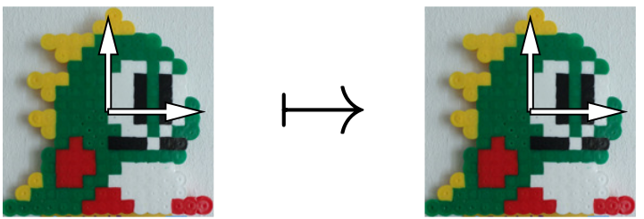
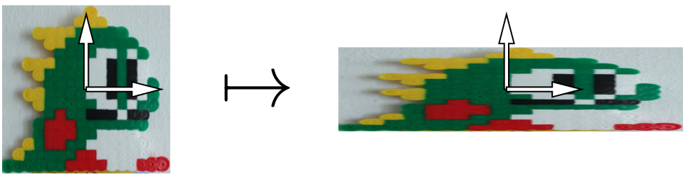
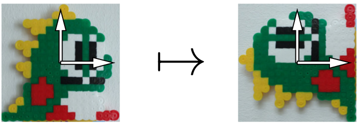
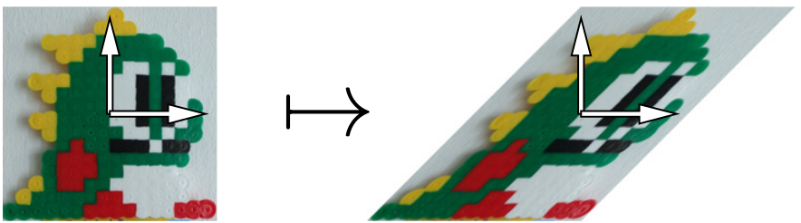
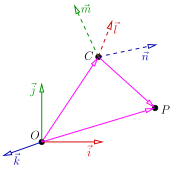
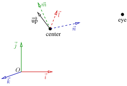

Better camera handling
In the previous chapter we have chained three different transformations to the 3D object to simulate a camera:
auto [ax, ay, az] = project(persp(rot(model.vert(i, 0))));
auto [bx, by, bz] = project(persp(rot(model.vert(i, 1))));
auto [cx, cy, cz] = project(persp(rot(model.vert(i, 2))));
All three transformations are encoded by very different functions, let us see if we can unify the treatment. Essentially we want to position, orient, and size objects in a scene. Let us review two classes of transformations that will allow us to do that.
Linear transformations
In computer graphics, everything you see - models, characters, cameras - is made of points and vectors. To animate, move, rotate, or resize them, we apply linear and affine transformations to their coordinates.
A linear transformation is a mathematical way to reshape space using just multiplication — no bending, no shifting. In 1D, this is easy to imagine: multiplying a number by 2 stretches the space, and multiplying by -1 flips it. For example, the transformation \(x \mapsto 2x\) doubles \(x\), and \(x \mapsto -x\) reflects it across zero.
In 2D or 3D the same idea applies, but now we multiply a vector by a matrix instead of a single number. This matrix controls how space is scaled, rotated, or sheared.
Formally, in \(\mathbb R^n\), a linear transformation can be written as \(\vec x \mapsto A\vec x\), where \(\vec x\) is a vector (or a point), and \(A\) is a \(n\times n\) matrix.
In 2D \(A\) has for entries: \(A = \begin{bmatrix}a&b\\c&d\end{bmatrix}\), so any 2D point \(\begin{bmatrix}x\\y\end{bmatrix}\) is mapped to \(\begin{bmatrix}ax+by\\cx+dy\end{bmatrix}\), since \(\begin{bmatrix}a&b\\c&d\end{bmatrix}\begin{bmatrix}x\\y\end{bmatrix} = \begin{bmatrix}ax+by\\cx+dy\end{bmatrix}.\)
Let us see few examples.
- Identity: The simplest 2D transformation is the identity:

- Scaling:



For example:
- A 2D rotation matrix spins points around the origin.
- A scaling matrix stretches objects wider or taller.
- A shear matrix slants shapes like melting jello.
These transformations are called linear because they preserve straight lines and the origin.
Affine transformations
Formally, in \(\mathbb R^n\), an affine transformation \(T\) has form \(T(\vec x)=A\vec x+\vec b\), where \(\vec x\) is a vector (or a point), \(A\) is a \(n\times n\) representing a linear transformation (like rotation, scaling, or shear), and \(\vec b\) is a translation vector.
Note affine transformations are more general than linear
, that linear transformation is a special case of an affine transformation where \(\vec b = \vec 0\). It always maps the origin to the origin, since \(A \vec 0 = \vec 0\). But in graphics, we often need to move (translate) things - hence affine transformations are more general and more useful. Thus, a transformation like rotation or scaling in 3D can be represented with a \(3\times 3\) matrix, and a 3D vector captures the translation.
It turns out that with a small trick we can express all transformations (including translation) by a single matrix:
This matrix captures the entire transformation and is easy to store and manipulate.
Homogeneous Coordinates
In computer graphics, we extend affine transformations into matrix form using homogeneous coordinates, allowing all transformations (including translation) to be expressed as a single matrix:
This is why we often use 3×3 matrices in 2D and 4×4 matrices in 3D graphics.
Change of basis in 3D space
In Euclidean space, coordinates can be given by a point (the origin) and a basis. What does it mean that point \(P\) has coordinates \((x,y,z)\) in the frame \((O, \vec i,\vec j,\vec k)\)? It means that the vector \(\overrightarrow{OP}\) can be expressed as follows:
Now image that we have another frame \((O', \vec i',\vec j',\vec k')\). How do we transform coordinates given in one frame to another? First of all let us note that since \((\vec i,\vec j,\vec k)\) and \((\vec i', \vec j',\vec k')\) are bases of 3D, there exists a (non degenerate) matrix \(M\) such that:
Let us draw an illustration:

Then let us re-express the vector OP:
Now let us substitute (i',j',k') in the right part with the change of basis matrix:
And it gives us the formula to transform coordinates from one frame to another:
Let us create our own gluLookAt
Camera is defined via view parameters \(\text{eye}\), \(\text{center}\) and \(\overrightarrow{\text{up}}\), measured in world space. It is located at \(\text{eye}\), pointing at \(\text{center}\), with upward orientation towards \(\overrightarrow{\text{up}}\). In camera space, the camera is located at the axis \(\vec{k}\), pointing at the origin, and vector \(\overrightarrow{\text{up}}\) is vertical.
In 3D graphics, we position the camera onto the world space by specifying three view parameters: EYE, AT and UP, in world space.
The point EYE (ex, ey, ez) defines the location of the camera. The vector AT (ax, ay, az) denotes the direction where the camera is aiming at, usually at the center of the world or an object. The vector UP (ux, uy, uz) denotes the upward orientation of the camera roughly. UP is typically coincided with the y-axis of the world space. UP is roughly orthogonal to AT, but not necessary. As UP and AT define a plane, we can construct an orthogonal vector to AT in the camera space.
OpenGL and, as a consequence, our tiny renderer are able to draw scenes only with the camera located on the z-axis. If we want to move the camera, no problem, we can move all the scene, leaving the camera immobile.
Let us put the problem this way: we want to draw a scene with a camera situated in point e (eye), the camera should be pointed to the point c (center) in such way that a given vector u (up) is to be vertical in the final render.
Here is an illustration:

It means that we want to do the rendering in the frame (c, x',y',z'). But then our model is given in the frame (O, x,y,z)... No problem, all we need is to compute the transformation of the coordinates. Here is a C++ code computing the necessary 4x4 matrix ModelView:
void lookat(const vec3 eye, const vec3 center, const vec3 up) {
vec3 z = normalized(center-eye);
vec3 x = normalized(cross(up,z));
vec3 y = normalized(cross(z, x));
ModelView = mat<4,4>{{{x.x,x.y,x.z,0}, {y.x,y.y,y.z,0}, {z.x,z.y,z.z,0}, {0,0,0,1}}} *
mat<4,4>{{{1,0,0,-eye.x}, {0,1,0,-eye.y}, {0,0,1,-eye.z}, {0,0,0,1}}};
}
Note that z' is given by the vector ce (do not forget to normalize it, it helps later). How do we compute x'? Simply by a cross product between u and z'. Then we compute y', such that it is orthogonal to already calculated x' and z' (let me remind you that in our problem settings ce and u are not necessarily orthogonal). The very last step is a translation of the origin to the point of viewer e and our transformation matrix is ready. Now it suffices to get any point with coordinates (x,y,z,1) in the model frame, multiply it by the matrix ModelView and we get the coordinates in the camera frame! By the way, the name ModelView comes from OpenGL terminology.
Viewport
void viewport(const int x, const int y, const int w, const int h) {
Viewport = {{{w/2., 0, 0, x+w/2.}, {0, h/2., 0, y+h/2.}, {0,0,1,0}, {0,0,0,1}}};
}
void projection(const double f) {
Projection = {{{1,0,0,0}, {0,-1,0,0}, {0,0,1,0}, {0,0,-1/f,0}}};
}